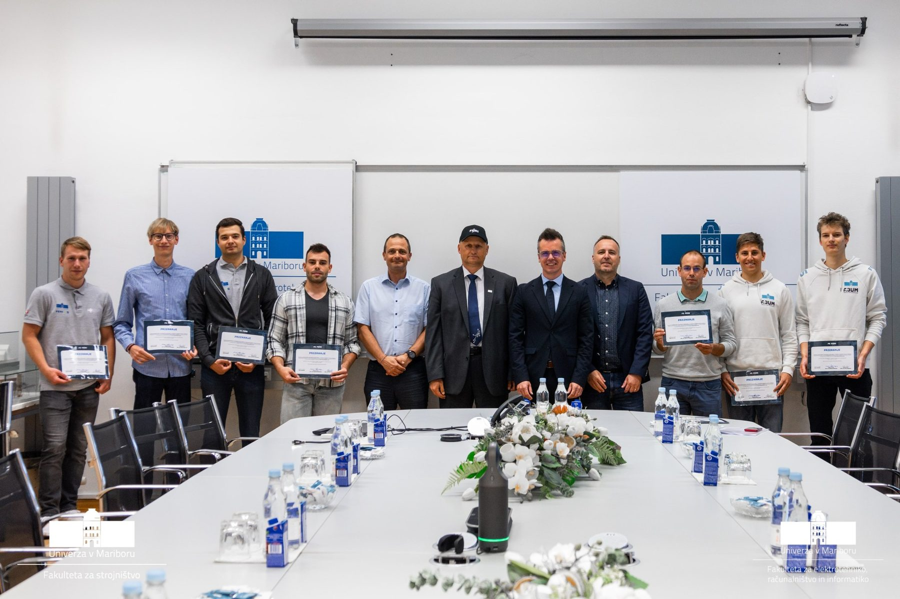
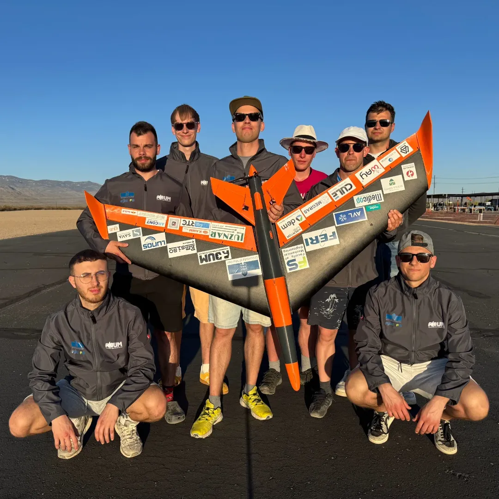

Študentsko letalsko društvo Univerze v Mariboru
Aeronavtično
Aeronavtično
društvo UM
Gradimo radijsko vodena letala in z njimi tekmujemo po svetu. Pridruži se ekipi, ki znanje iz predavalnic spremeni v let.
Iz predavalnice na vzletno stezo
ADUM (Aeronavtično društvo Univerze v Mariboru) združuje študente različnih fakultet, ki jih povezuje zanimanje za letalstvo, konstruiranje in praktično inženirstvo.
Vsako sezono razvijemo novo letalo. Ekipa je razdeljena na sklope za aerodinamiko, konstrukcijo, pogon, sisteme, programsko opremo, strojni vid, tovor in odnose z javnostjo. Tako vsak član prevzame svoj del odgovornosti in svoj del uspeha.
Pri delu uporabljamo Onshape, SolidWorks, XFLR5, OpenFOAM in Ansys, torej orodja, ki jih srečaš tudi v inženirski praksi.

Iz sezone v sezono napredujemo
Od prvega tekmovanja leta 2018 do uvrstitve med najboljše ekipe na svetu. Za vsakim rezultatom stojijo meseci načrtovanja, izdelave in testiranja.
2018
prva sezona na tekmovanju DBF v Tucsonu
75
ekip na tekmovanju SAE Aero Design East 2026
11.
mesto skupno v sezoni 2025/2026
Od skice do prvega poleta
Naše delo temelji na praktičnih izkušnjah. Vse, kar načrtujemo, tudi izdelamo, preizkusimo in izboljšamo.
Redno se srečujemo v delavnici, kjer nastajajo krilo, trup in elektronski sistemi, ter na terenu, kjer letalo preizkusimo v zraku. Vsak polet je nova informacija, ki jo vrnemo v načrtovanje.

Zadnje sezone
Kratek pogled v zadnja tekmovanja. Celotno zgodbo najdeš na strani s projekti.